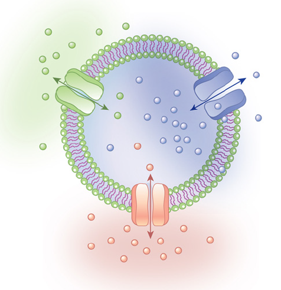
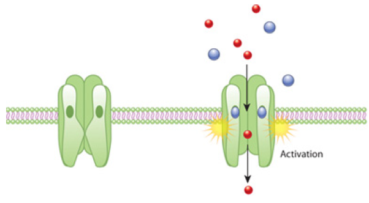
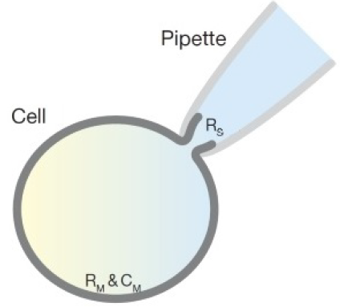
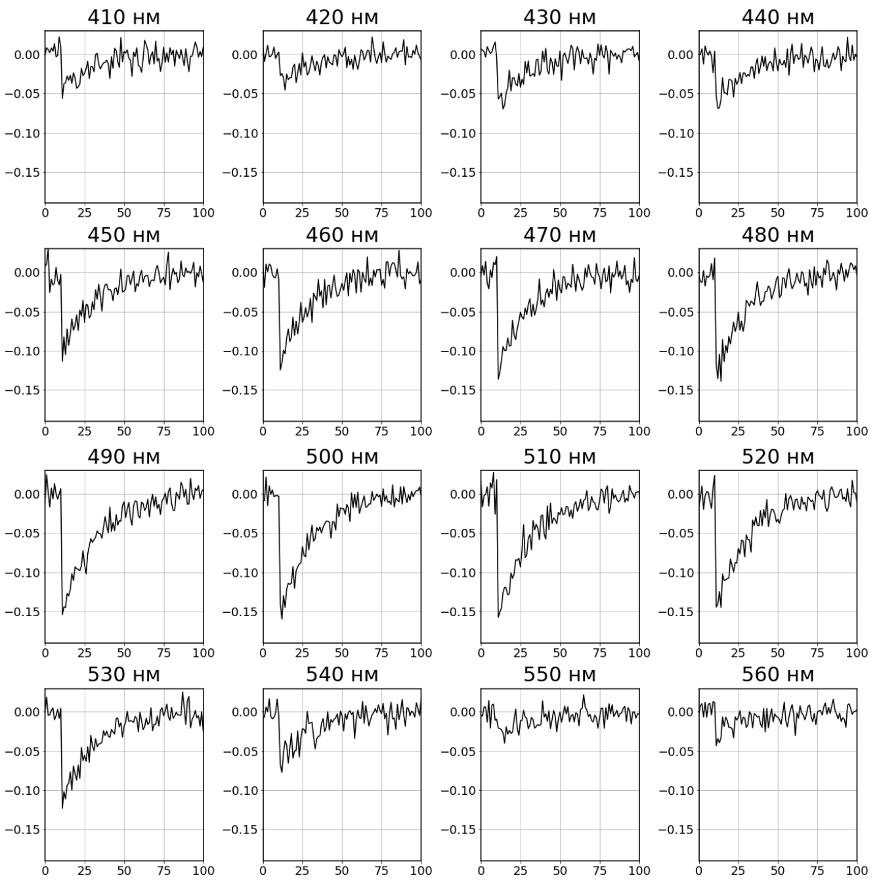
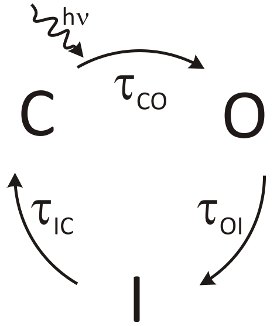
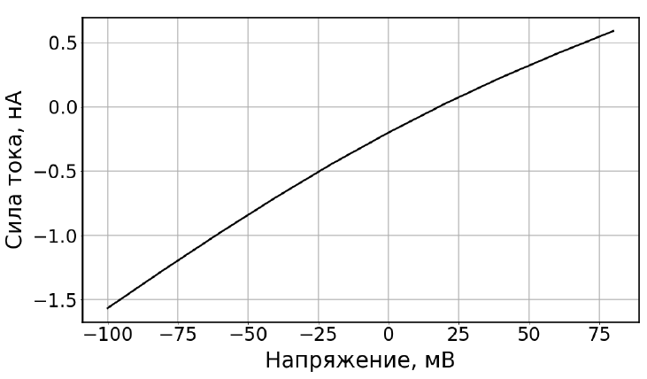
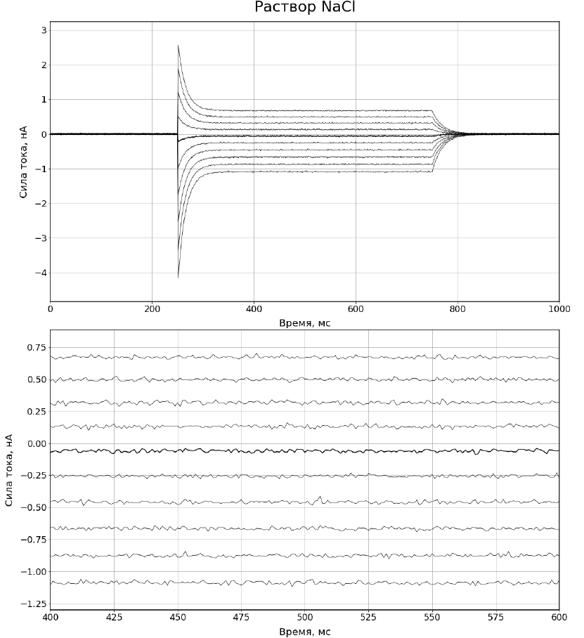
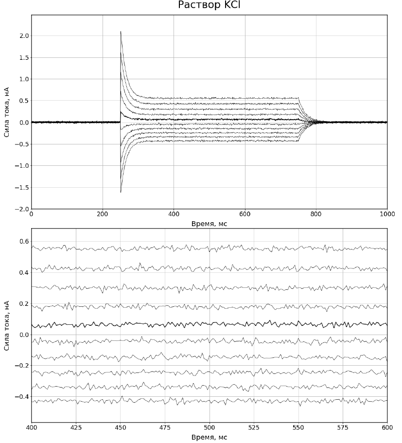
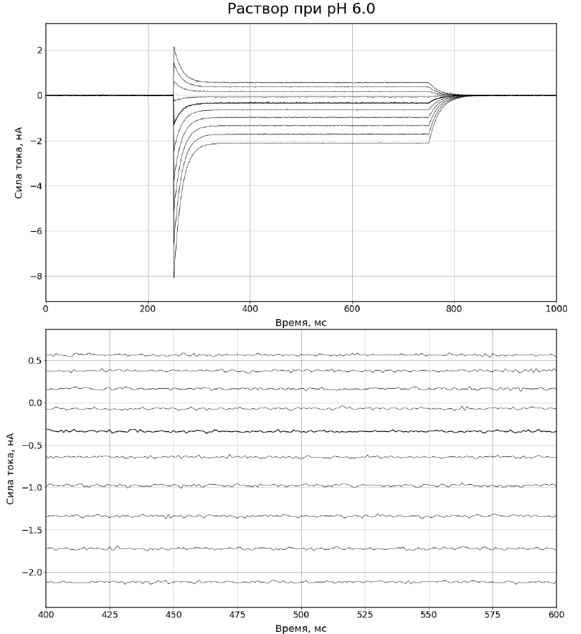

X20 (2020) — English translation
Living cells are covered with a membrane, the structural basis of which is a double layer of lipids, weakly permeable to water and practically impermeable to ions. Each cell must exchange various substances and, in particular, ions with the external environment. The transport of ions across the membrane plays an important role in the processes of cell excitation and signal transmission. Ions enter and leave the cell through proteins built into the membrane - channels. Channels are proteins that function as membrane pores by forming openings through which ions can pass. Membrane channels are selective—permeable only to certain substances. Selectivity is determined by the radius of the pores and the distribution of charged functional groups in them. There are channels that selectively allow sodium ions to pass through (sodium channels), as well as potassium, calcium and chloride channels. (see Fig. 1)

There are light-sensitive ion channels - channel rhodopsins. These channels move from a closed state, in which they are impermeable to ions, to an open state, absorbing photons of a certain wavelength (see Fig. 2). Next, the protein passes through several intermediate states to return from the open state to the closed state (in what follows we will assume that in intermediate states the channel is also impermeable to any ions).

Due to the free passage of charged particles (ions), the channels in the open state effectively increase the electrical conductivity of the cell membrane. To study the electrical properties of the membrane and study the properties of ion channels, there is a method of local potential fixation (Patch-clamp). The method is that a glass pipette forms contact with the cell membrane with a resistance of several gigaohms - this is the so-called gigaohm contact. An electrode is placed in a pipette filled with electrolyte, and a second electrode is placed extracellularly in the washing fluid. In order to measure the current flowing through the entire cell membrane, a piece of it enclosed inside a pipette is pierced by excess pressure. This measurement method is called Whole-cell patch-clamp (literally “full-cell patch clamp”, see Fig. 3). An effective electrical circuit is as follows: one of the electrodes is outside the cell, and the second is inside.

One of the characteristics that can be measured for channels is their current-voltage characteristic. The current-voltage characteristic of channel rhodopsin is the dependence of the steady-state current on the voltage applied to the cell membrane through electrodes. The current-voltage characteristic depends on the composition of the solutions in which measurements are made. In this part, you will process experimental data collected for channel rhodopsin, which allows positive monovalent ions: sodium, potassium and hydrogen to pass through. The appendix shows the time dependence of the current passing through membrane channel rhodopsins when the light is turned on for three different solutions washing the measured cell. Ion concentrations in extracellular fluid in three cases:
1. $\mathrm{[H]}$ = $10^{-7.5}$ mol/l (pH=7.5), $\mathrm{[Na]}$ = 140 mmol/l, $\mathrm{[K]}$ = 0 mmol/l, $\mathrm{[Cl]}$ = 140 mmol/l 2. $\mathrm{[H]}$ = $10^{-7.5}$ mol/l (pH=7.5), $\mathrm{[Na]}$ = 0 mmol/l, $\mathrm{[K]}$ = 140 mmol/l, $\mathrm{[Cl]}$ = 140 mmol/l 3. $\mathrm{[H]}$ = $10^{-6.0}$ mol/l (pH=6.0), $\mathrm{[Na]}$ = 0 mmol/l, $\mathrm{[K]}$ = 0 mmol/l, $\mathrm{[Cl]}$ = 140 mmol/l
The intracellular solution is set by a solution that is poured into a pipette. It is the same in all three experiments: $\mathrm{[H]}$ = $10^{-7.5}$ mol/l (pH=7.5), $\mathrm{[Na]}$ = 110 mmol/l, $\mathrm{[K]}$ = 0 mmol/l, $\mathrm{[Cl]}$ = 110 mmol/l
\textbf{The voltage at which the plus is inside the cell is considered positive. The current strength at which positively charged particles flow from inside the cell to the outside is considered positive.}
Another characteristic that can be measured that describes channel rhodopsins is permeability to different ions. The permeabilities for $\mathrm{Na}, \mathrm{K}$ and protons will be denoted by $P_\mathrm{Na}; P_\mathrm{K}; P_\mathrm{H}$. Permeability is a characteristic of a membrane with channels: it depends on the number of channels, but does not depend on the solutions washing the membrane. The ratio of permeabilities for two different ions does not depend on the number of channels and is the most fundamental characteristic of channel rhodopsins. Permeability is part of the Goldman-Hodgkin-Katz equation, which relates the current through the membrane to the voltage across it:
$$ J(u)=\cfrac{z^2e^2u}{kT} \cfrac{P_{out}c_{out}-P_{in}c_{in}\,\mathrm{exp}\left(\cfrac{zeu}{kT}\right)}{1-\mathrm{exp}\left(\cfrac{zeu}{kT}\right)} $$
where $J$ is the current strength, $u$ is the voltage applied to the membrane, $e$ is the elementary charge, $z$ is the charge number of the transmitted ion, $k$ is Boltzmann’s constant, $T = 24~{}^\circ\mathrm{C}$ is the temperature during the experiment, $P_{out}$ and $c_{out}$ are the permeability and concentration for ion that is in the extracellular solution, $P_{in}$ and $c_{in}$ are the permeability and concentration for the ion that is inside the cell. Consider that during the experiment, the compositions of the solutions outside and inside the cell remain unchanged.
Another fundamental characteristic of channel rhodopsins is their spectrum of action. The action spectrum is the dependence of the charge passing through the cell membrane with channels on the wavelength of the exciting light. To measure the action spectrum of channel rhodopsin, the cell under study is irradiated with ultrashort laser flashes (5 ns duration; pulses contain the same number of photons per flash for different wavelengths) and the current is measured (see Fig. 4). The charge q passing through the membrane is counted as the half-decay time of the current. The resulting dependence $q(\lambda)$ is normalized to the maximum charge value $q_\max = q (\lambda_\max)$.

In the introduction it was said that when a channel absorbs photons, it goes through several intermediate states and returns to the initial closed state. All these states together are called a photocycle (see Fig. 5, which shows a photocycle in which one intermediate state $I, C$ and $O$ are closed and open states, respectively). Transitions between these states occur with some probability. The transition from a closed state to an open state is impossible without absorption of light. In the presence of light, this transition also occurs with some probability. The probability of a transition between two states $A$ and $B$ is described by the value $\tau$ – the characteristic time of transition from $A$ to $B$. This time is defined as the inverse derivative of the transition probability with respect to time: $\tau_{AB}=\left(\cfrac{dp}{dt}\right)^{-1}$ (that is, the probability of transition in time $dt$ is equal to $dp$).

One of the most important characteristics of channel rhodopsins is their selectivity. Selectivity is the ability to allow only certain types of ions to pass through. The selectivity can be different: only positive or only negative ions can pass through the channel, or, for example, only sodium (or potassium, or any other ion) can pass through. Selectivity is determined by the internal structure of the protein. Let's consider an experiment with another channel rhodopsin (see Fig. 6, graphs given in points A-C, not related to it). In this experiment, the compositions of the solutions are as follows: Wash: pH=7.5, $\mathrm{[Na]}$ = 200 mmol/L, $\mathrm{[K]}$ = 0 mmol/L, $\mathrm{[Cl]}$ = 200 mmol/L Intracellular: pH=7.5, $\mathrm{[Na]}$ = 100 mmol/L, $\mathrm{[K]}$ = 0 mmol/L, $\mathrm{[Cl]}$ = 100 mmol/l




Source: https://pho.rs/p/173